AI의 다음 가치는어디에 쌓이는가
CoreWeave의 금융 불안에서
현실의 결과를 학습하는 operation loop까지
수요가 강한데도 주가와 신용은 흔들릴 수 있다. 모델 성능이 좋아져도 모델을 만드는 회사의 이익은 제한될 수 있다. 이 두 역설을 연결하는 질문은 하나다. 쉽게 복제되지 않는 희소성은 어디에 남는가.
이번 회차의 주장은 “AI 수요의 성장”과 “AI 기업의 생존”을 분리해서 보자는 것. 인프라의 금융 구조가 흔들려도 산업은 계속될 수 있고, 모델이 범용재가 될수록 이익은 다른 층으로 이동할 수 있다는 분석임.
노정석은 최근 시장 조정을 수요 붕괴보다 금리, 차환 비용, 만기 불일치가 만든 hiccup으로 해석함. 장기적으로는 데이터와 인재의 확산이 모델 격차를 줄이고, 가치가 물리적 병목과 운영 안에서만 생성되는 보상 신호에 모일 것으로 전망함.
이 글은 원 노트의 장면 기록을 주제별로 재구성함. 시장 진단 → 모델 경쟁 → 신호의 소유권 → 사업 전략 순으로 읽되, 수치·전망의 검증 수준을 함께 표시함.
수요와 현금의 시간은 다름
계약 잔고가 커도 이자 지급과 현금 유입의 시점이 어긋나면 차환 위험이 커짐. CoreWeave를 이해하는 핵심은 계약의 존재뿐 아니라 현금이 들어오는 순서임.
모델 격차는 영구적 자산인가
데이터와 인재가 퍼지면 성능 우위의 지속 시간이 짧아질 수 있음. 모델의 범용재화가 진행된다는 가정 아래, 성능보다 비용·소유권·운영 연결이 중요해짐.
현실의 결과가 다음 학습을 만듦
재구매, 수리 내구성, 수율처럼 시간이 지나야 드러나는 결과는 운영 밖에서 만들기 어려움. 지속 가능한 차별화의 후보는 그 결과를 수집하고 개선에 쓰는 순환임.
가치는 ‘새지 않는 희소성’으로 간다
산업이 성장하는 것과 그 안의 특정 기업이 이익을 가져가는 것은 별개의 문제. 이번 분석은 AI 가치사슬의 각 층에 같은 질문을 던지는 데서 시작함.
출연자 해석노정석이 제시한 출발점은 단순함. 각 층의 마진은 그 층의 희소성에 영향을 받고, 그 희소성은 쉽게 새어 나가지 않아야 함. 기술, IP, 해자라는 표현보다 중요한 것은 경쟁자가 같은 자원을 얼마나 빨리 확보할 수 있는가임.
제약에서는 약을 만드는 쪽에 가치가 모일 수 있지만, 공급자가 많은 생활용품에서는 유통·검색·인플루언서처럼 소비자의 시선을 점유한 쪽에 가치가 모일 수 있음. 같은 논리를 전력부터 애플리케이션까지 적용하는 것이 이번 회차의 중심 방법론임.
- 01 / ENERGY에너지전력·부지·계통 연결
- 02 / CHIPS반도체GPU·HBM·패키징
- 03 / INFRASTRUCTURE인프라AI factory·냉각·운영
- 04 / MODELS모델성능 경쟁과 범용재화
- 05 / APPLICATIONS애플리케이션고객·결제·업무 결과
“가치는 leak하지 않는 scarcity로 간다.”
노정석의 중심 논지 · 00:11:02, 00:34:14
인프라 조정 뒤에는 무엇이 남는가
a16z의 모바일 인터넷 사례를 빌리면 반도체·인프라가 먼저 성장하고, 그 위에서 소프트웨어·서비스의 큰 시장이 열림. 노정석은 현재를 인프라 구축의 후반부로 보며, 철도 붐처럼 과잉 투자의 조정이 시설의 소멸보다 소유자의 교체로 나타날 가능성을 강조함.
이 논리에서 구조조정은 산업의 끝을 뜻하지 않음. 더 낮은 가격에 자산을 인수한 사업자는 다른 비용 구조로 운영하고, 그 위에 서비스가 성장할 수 있음. 다만 철도·통신·모바일의 역사는 현재 AI 시장을 설명하기 위한 유비이며, 같은 순서가 재현된다는 증거는 아님.
장면 근거
원본 영상의 시각 자료 · 시간 링크로 확인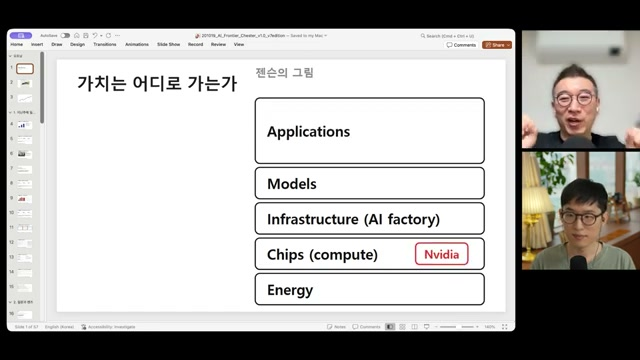
젠슨의 그림: 다섯 층의 가치사슬
Energy → Chips → Infrastructure → Models → Applications. 노정석은 젠슨 황의 그림에서 애플리케이션 층이 두껍고, compute 층에는 Nvidia가 자리한다는 점에 주목함. 이후 논의의 질문은 각 층의 크기보다 희소성과 마진의 관계로 이동함.
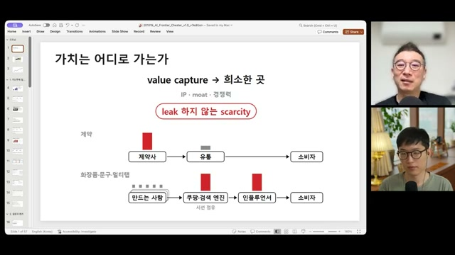
공급이 많아지면, 희소한 접점이 돈을 번다
제약사 중심의 가치 배분과 생활용품의 유통·검색·인플루언서 중심 배분을 대비함. IP·moat·경쟁력의 공통 조건을 “새지 않아야 한다”로 요약하고, 이 렌즈를 AI의 모든 층에 적용함.
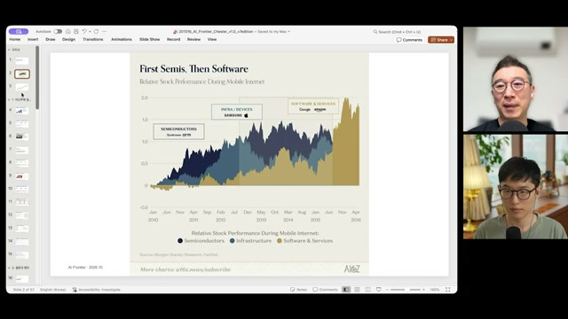
First Semis, Then Software
영상에 인용된 a16z 차트는 모바일 인터넷 시기의 상대 주가 흐름을 제시함. Qualcomm·Arm, 삼성·Apple의 성장 뒤 B2B SaaS와 Airbnb 같은 서비스가 부상했다는 역사적 비교임. 원 차트의 데이터와 산식은 이 노트에서 확인하지 않음.
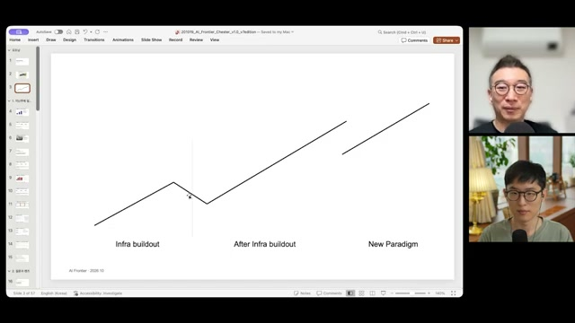
조정은 비용 구조와 소유자를 바꾼다
과장된 미래 기대가 중복 투자를 만들고, 조정 이후 손바뀜을 거친 자산 위에서 서비스가 성장한다는 설명. “지금은 인프라 buildout의 거의 끄트머리”라는 진단은 출연자의 국면 판단임.
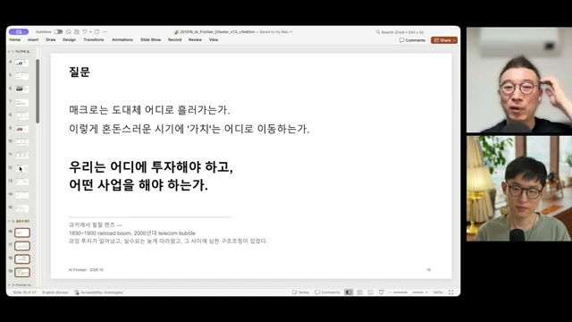
질문의 전환: 시장 전망에서 사업의 위치로
“우리는 어디에 투자해야 하고, 어떤 사업을 해야 하는가.” 철도 붐과 통신 버블의 공통점을 과잉 투자, 늦게 따라오는 실수요, 그 사이의 구조조정으로 정리함. 노정석은 통신보다 철도 붐의 사이클에 더 가까운 유사성을 봄.
수요가 진짜여도, 차환은 막힐 수 있다
CoreWeave에 대한 회차의 핵심 해석은 ‘수요의 진위’보다 ‘현금의 시차’에 있음. 미래의 매출과 오늘의 이자는 같은 시간이 아님.
영상 제시도입부에서는 한국 메모리 반도체 주가가 고점 대비 40% 넘게 하락하고, CoreWeave의 채권 수익률과 CDS 스프레드가 급등한 상황을 설명함. 반면 계약 잔고, 최신 GPU의 품귀, 주요 고객의 compute 수요는 강하다고 제시함.
출연자 해석노정석은 이 조합을 AI 수요 붕괴보다 금리·공매도·차환 조건의 변화로 읽음. 그러나 계약 잔고가 크다는 사실만으로 수익성이나 현금 회수 시점이 보장되는 것은 아님. 이 둘을 구분하는 것이 영상의 논지를 이해하는 핵심임.
먼저 보이는 시차: 개발자 다음 시장
Anthropic의 분기 매출은 슬라이드상 2026년 Q1 $4.7B → Q2 $11.6B → Q3 $16.8B. 분기 성장률은 +147%에서 +45%로 낮아짐. 출연자들은 여전히 매우 큰 성장률이지만, 시장 기대는 그보다 더 높았다고 설명함.
개발자 약 3천만 명에서 지식 노동자 약 15억 명으로의 확대도 자동으로 일어나지 않는다는 관점. “coder는 다 들어왔다”는 표현은 침투율을 검증한 결론이 아닌 영상의 도식적 표현이며, 비개발자 기업은 사용 관점과 업무 설계부터 마련해야 한다는 것이 요지임.
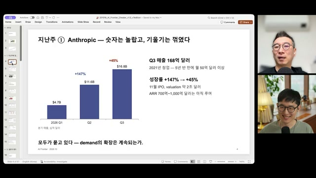
매출 규모보다 기울기에 민감한 시장
Q1 47억 → Q2 116억 → Q3 168억 달러로 표시됨. Claude Code가 성장의 중심이었다는 설명과 함께 11월 IPO, 약 2조 달러 기업가치가 언급됨. ARR 700억~1,000억 달러는 슬라이드에서도 루머로 구분됨. 모두 별도 검증이 필요한 제시값임.
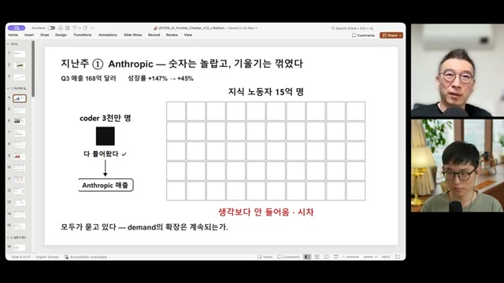
큰 TAM과 실제 도입 사이의 평지
개발자 시장의 성공을 비개발자 시장으로 곧바로 외삽하기 어렵다는 주장. 비개발자 기업은 “어떻게 써야 할지”부터 정리해야 하므로 한 번의 평지 구간이 생길 수 있고, Q4 성장률이 중요해질 것으로 전망함.
CoreWeave의 세 개의 시계
영상의 설명에 따르면 계약별 특수목적법인(SPV)에 데이터센터 임차, GPU 장비, 고객 계약을 묶고 차입으로 자금을 조달함. 고객 계약이 위험을 낮춰도, 짧은 매출 계약과 긴 자산·부채 의무의 시간 차이는 남음.
매출 갱신의 시계
상환·차환의 시계
고정 의무의 시계
만기수익률(YTM). 쿠폰 9.75%와 구분 필요. 액면 100 대비 가격 약 80이라는 설명이 함께 제시됨.
신용 위험에 대한 시장 가격. 10/22에도 1,115bp로 높았다는 슬라이드 설명.
약 1,040억 달러. 상세 슬라이드에는 1,042억 달러로 표기됨. 잔고와 즉시 사용 가능한 현금은 다름.
데이터센터가 가동돼야 계약 잔고가 현금으로 전환되지만, 이자와 건설비는 그 전에 지출될 수 있음. 노정석은 매년 약 350억 달러의 신규 조달이 필요하다는 슬라이드 수치를 근거로, 다음 자금을 얼마에 빌릴 수 있는가가 핵심이라고 설명함.
숫자를 읽을 때 구분할 것
편집 주석9.75% → 15.78%는 동일 지표의 단순한 전후 비교가 아님. 앞은 쿠폰, 뒤는 시장가격에 따른 YTM으로 제시됨. YTM과 채권가격의 관계는 쿠폰, 잔존 만기, 현금흐름 조건에 따라 달라지므로 “15.78% = 가격 80”이라는 일반식으로 읽지 않아야 함.
1bp = 0.01%포인트. 1,195bp는 연율 스프레드 표기로 11.95%포인트에 해당함. 이를 원금 100당 약 12의 보험료로 설명한 것은 직관적 비유이며, 실제 CDS의 지급 구조·선급금 등은 별도 조건에 따름.
CDS는 기존 채권의 쿠폰을 직접 바꾸지 않음. 다음 차입 비용에 대한 시장의 신용 평가를 보여주는 신호로 읽을 필요가 있음. 영상의 “60%” 역시 관측된 부도 확률이 아닌, 특정 가정 아래 보험료를 해석한 값임.
구조와 신용 위험
수요 · 현금 전환 · 조달 조건을 나눠 보기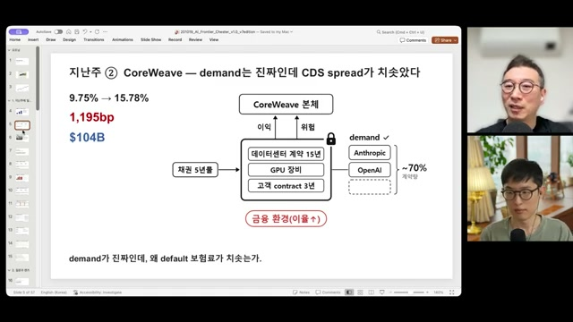
수요를 담보로 낮추는 조달 비용
15년 데이터센터 계약, 장비, 3년 고객 계약을 묶고 5년 차입으로 조달하는 구조를 설명함. Anthropic·OpenAI 등이 계약량의 약 70%를 차지한다고 제시됨. 고객의 구매 약정으로 위험을 낮추고 남는 수익이 본체로 올라간다는 설명임.
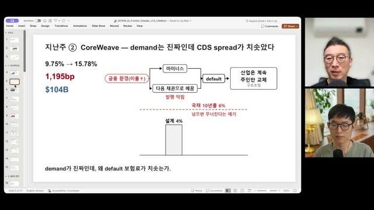
산업은 계속되고 주인이 바뀐다는 가설
금리 상승이나 다음 채권 발행의 차질이 디폴트로 이어질 수 있다는 설명. 설계 금리 약 4%, 국채 10년물 6%라는 문턱도 언급되지만, 실제 모델로 검증한 임계값은 아님. 노정석은 CoreWeave의 파산 여부를 계산한 분석이 아니라고 선을 그음.
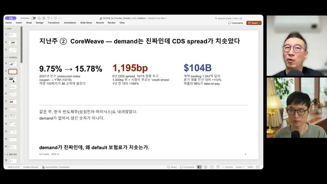
큰 계약 잔고와 높은 신용 스트레스
쿠폰 9.75%, YTM 15.78%, CDS 1,195bp, 계약 잔고 약 $104B를 함께 제시함. 분기 매출 전년 대비 +112%, 매출의 98%가 take-or-pay라는 수치도 소개됨. 수요 지표와 신용 위험이 동시에 높다는 것이 문제 설정임.
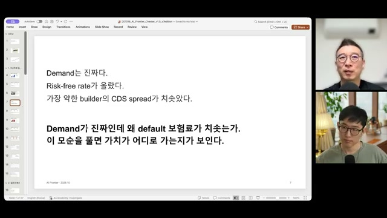
이번 회차를 이끄는 모순
“Demand는 진짜다. Risk-free rate가 올랐다.” 기술 발전의 강한 신호와 가장 취약한 인프라 사업자의 신용 불안이 공존한다는 주장. 이 모순을 풀면 가치의 이동 경로가 보인다는 질문으로 연결됨.
같은 회사도 어느 층을 보느냐에 따라 다르게 보임
프로젝트 자산의 수익성이 괜찮아도 모회사의 자금 공백은 클 수 있음. 은행의 노출 규모가 제한적이라는 판단도 이와 양립 가능함. 따라서 영상은 “파산”을 하나의 사건으로 묶지 말고 SPV, 모회사, 자산 청산의 층으로 구분할 것을 제안함.
| 영상에 소개된 관점 | 관찰 대상 | 핵심 논리 |
|---|---|---|
| Goldman Buy · $106 · 10/19 | SPV의 프로젝트 자산 | 차입 비용이 100~200bp 올라도 신규 프로젝트의 수익률은 매력적이라는 평가. |
| Bernstein Underperform · $51 · 10/22 | 모회사의 자금 부족 | 프로젝트의 수익성과 별개로 funding gap을 중시하는 시각. |
| JPMorgan 은행 노출 · 10/20 | 대출 은행 | 주요 은행별 $1~3B의 노출을 제한적 위험으로 평가했다는 소개. |
영상 슬라이드의 요약이며, 원 보고서와 목표주가를 독립 대조하지 않음. 모바일에서는 표를 좌우로 이동해 확인 가능.
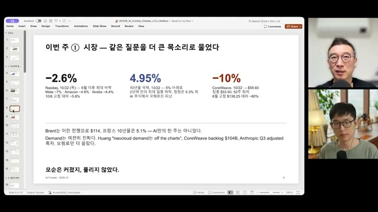
AI만의 한 주는 아니었다
10/22 Nasdaq −2.6%, 미 국채 10년물 4.95%, CoreWeave −10%와 $55.60을 제시함. Meta −7%, Amazon −4.6%, Nvidia −4.4%, Brent $114와 프랑스 국채 5.1%도 언급됨. 슬라이드는 전쟁·거시금융 요인을 함께 놓고 해석함.
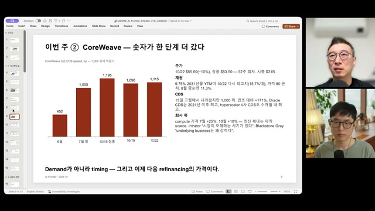
정점 이후에도 높은 CDS
5년 CDS는 6월 452 → 7월 말 1,000 → 10/15 1,195 → 10/19 1,090 → 10/22 1,115bp로 제시됨. 회사 측 반론으로 compute 가격이 7월 +25%, 10월 +10% 올랐다는 주장도 소개함. 최신 세대의 희소성과 조달 위험을 병치한 장면임.
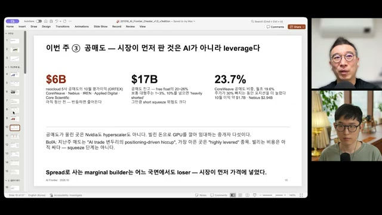
시장이 먼저 판 것은 레버리지라는 해석
ORTEX를 인용해 neocloud 5사의 10월 공매도 평가이익 $6B, 잔고 $17B, CoreWeave 공매도 비중 23.7%를 제시함. 대상은 CoreWeave·Nebius·IREN·Applied Digital·Core Scientific. 차입으로 GPU를 설치해 임대하는 구조에 압력이 집중됐다는 해석임.
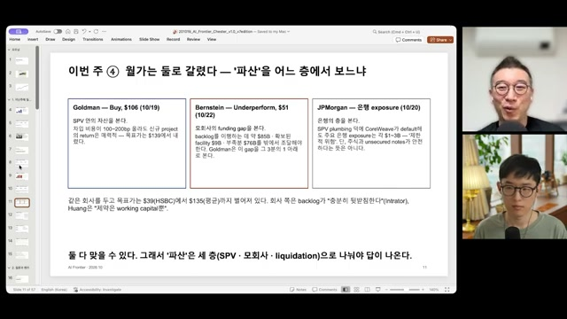
‘파산’을 어느 층에서 볼 것인가
프로젝트 자산, 모회사 자금 부족, 은행 노출이라는 세 관점을 비교함. Ken Griffin의 거품론과 Goldman의 강세 관점도 언급됨. 서로 다른 대상을 보는 평가가 동시에 맞을 수 있다는 것이 슬라이드의 결론임.
가격의 전환점과 보이지 않는 의무
또 하나의 시차는 GPU 세대와 계약 가격 사이에 있음. 구세대의 현물 가격이 내려가도 최신 세대는 부족할 수 있음. 영상은 최신 세대의 1년 예약 가격이 하락하기 시작하는 때를 가격 경쟁의 전환점으로 제안함.
자금 구조도 기업마다 다름. 현금 창출력이 큰 기업에는 수익성 악화로 끝날 부담이, 반복 차환에 의존하는 기업에는 생존 문제로 나타날 수 있음. Meta의 데이터센터 사례는 장부 밖 임대·보증 의무까지 살펴야 한다는 논점으로 이어짐.
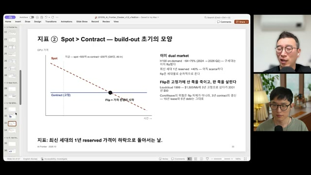
Spot > Contract에서 Flip으로
H100 on-demand는 2024~2026 Q2에 −64~75%, 최신 세대 1년 reserved는 +40%라는 수치를 제시함. 최신·구세대 시장을 분리해 봐야 한다는 주장. GW당 all-in spot 약 500억, contract 약 200억이라는 표기는 원자료의 통화·기간 기준 추가 확인이 필요함.
Loudcloud가 1999년 $1,500/Mb에 3년 고정 구매한 뒤 2001년 가격이 $50으로 내려간 사례를 비유로 사용함. CoreWeave에서는 3년 고객 계약을 갱신할 때 15년 임차·5년 차입 의무가 남는다는 점을 강조함.
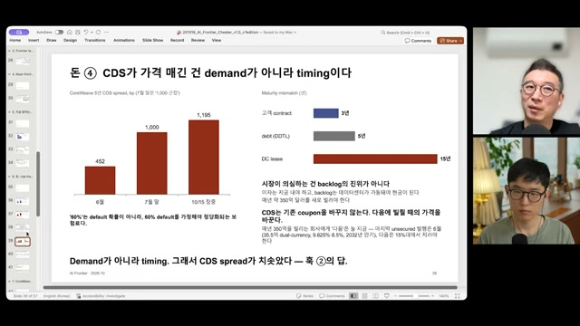
보험료가 가격 매긴 것은 타이밍
“이자는 지금 내야 하고 backlog는 데이터센터가 가동돼야 현금이 된다.” 고객 3년, debt 5년, 임차 15년의 간격과 연간 약 $35B 신규 조달을 제시함. 노정석은 이 타이밍 해석을 Fable이 찾아온 것이라고 밝힘. “60%”는 가정에 의존하는 해석값으로 구분함.
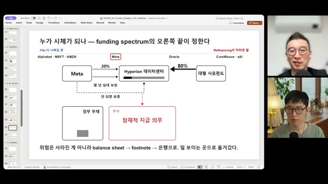
장부에서 주석으로 이동하는 위험
Meta 20%, 사모펀드 80%로 Hyperion을 짓고 Meta가 임대·보증을 제공하는 구조를 설명함. 위험이 없어지는 대신 덜 보이는 의무로 이동할 수 있다는 주장. 사모펀드 명칭은 발언에서도 “Blue Owl인가”로 불확실하게 언급됨.
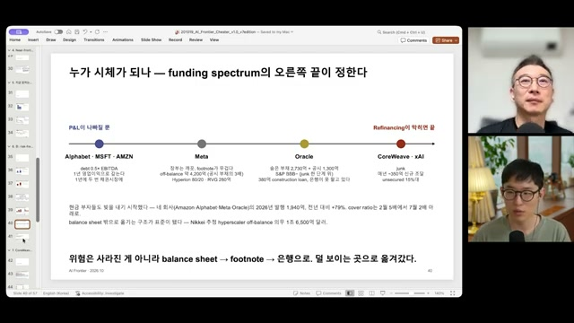
손익 악화와 차환 단절 사이
Alphabet·MSFT·AMZN → Meta → Oracle → CoreWeave·xAI 순으로 자금 조달 의존성을 비교함. Meta의 장부 밖 의무 약 $420B, Oracle 순부채 $273B와 별도 공시 $130B, hyperscaler 의무 $1.65T 등의 수치는 슬라이드 인용값이며 합산·회계 범위 미검증임.
Oracle의 대출 매각 부진, neocloud의 10% 이상 조달 금리도 언급됨. “Google의 첫 채권 발행” 및 SpaceX 상장 등을 통한 부채의 자본 전환 전망 역시 발언 수준으로만 기록함.
모델의 우위가 짧아지면, 무엇이 남는가
이 회차의 장기 전망은 모델 격차가 계속 좁혀진다는 가정 위에 서 있음. 추격의 시간차와 현실 업무의 난도를 구분해야 논지가 선명해짐.
선도 모델과 추격 모델의 시간차
Frontier와 follower 사이의 성능 지연. 데이터·인재·자본의 확산으로 비교적 빨리 닫힐 수 있다는 주장.
영상의 예: open-weight가 약 4개월 뒤를 추격, 미·중 최고 모델의 Arena 격차 2.7%, 같은 성능의 가격은 연간 약 10배 하락.
범용 모델과 현장의 요구 사이 거리
일반 모델이 수행하는 일과 특정 산업이 요구하는 수준 사이의 차이. 분야별 데이터·검증·운영이 필요해 더 느리게 닫힌다는 주장.
영상의 예: coding은 닫혔다고 보고, law·bio·physical·규제 영역에는 여전히 간격이 남아 있다고 설명함.
수치와 “닫힘”의 판단은 영상의 평가임. 평가 과제·기준·측정 기간이 다르면 격차의 크기도 달라질 수 있음.
Compute, Data, Talent: 어느 자본이 새는가
출연자 해석데이터는 공급사가 다른 고객에게 다시 팔고, 인재가 이동하면 연구 방법도 퍼짐. 반면 물리적 compute는 돈과 공급 제약을 넘어 실제로 확보해야 함. 그래서 노정석은 time gap의 바닥에는 compute gap이 있다고 봄.
그 gap까지 좁혀지면 모델 층은 전기처럼 범용 서비스가 되고, 경쟁력은 단순한 능력보다 cheapest intelligence per watt, 즉 전력당 제공 비용으로 이동할 수 있음. 다만 “compute만 새지 않는다”는 표현은 이 회차의 전략적 구분이며, 모델 경쟁의 모든 요인을 설명하는 완결된 모형은 아님.
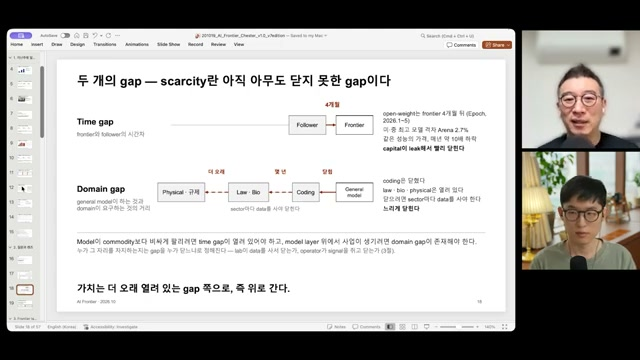
희소성이란 아직 닫히지 않은 간격
모델 간 시간차와 산업별 요구 수준의 차이를 구분함. 기능이 범용 모델의 feature로 들어오는 순간 해당 domain의 독립적 가치가 줄어들 수 있다는 주장. 박종현은 데이터 판매 업체가 어떤 분야의 데이터를 모으는지 보면 다음 진입 영역을 가늠할 수 있다고 덧붙임.
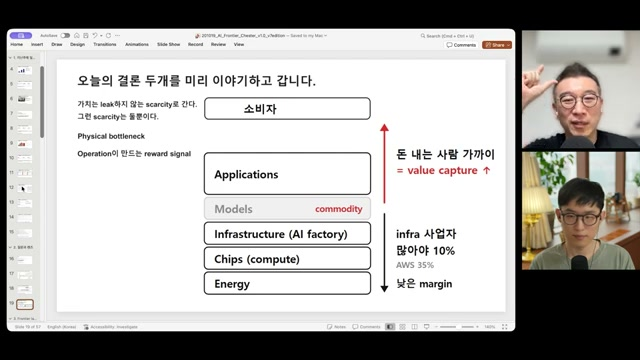
모델 층 위아래의 가치
남는 희소성을 physical bottleneck과 operation이 만드는 reward signal로 정리함. 위로는 돈을 내는 고객과 가까운 사업, 아래로는 물리적 공급 제약을 제시함. 인프라 마진 약 10%, AWS 35%라는 비교값의 기간·회계 기준은 확인되지 않음.
위쪽까지 모두 범용재가 된다면 기업의 초과이익 대신 낮은 가격의 편익이 소비자에게 갈 수 있다는 단서도 포함됨.
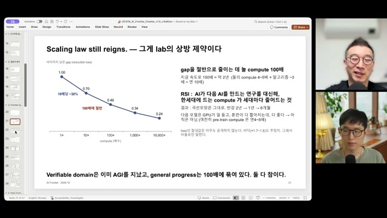
Scaling law는 성능 향상과 비용 제약을 함께 만듦
Compute 1×, 10×, 100×, 1,000×, 10,000×에 대해 상대 reducible loss 1.00, 0.70, 0.49, 0.34, 0.24를 제시함. 성능 향상은 아직 compute 확대와 효율 개선의 조합이며 RSI는 아니라는 판단임.
“검증 가능한 영역은 이미 AGI를 지났다”, “1GW급으로 한 분기 pre-training하면 한 세대”도 출연자의 평가·규모 설명으로 제시됨.
능력의 독점에서 제공 비용의 경쟁으로
연구자 1인당 H100 5,000개라는 규모 예시와 함께, 데이터의 재판매·인재 이동에 따른 확산을 설명함. 방법과 정보가 퍼질수록 serving cost가 중요해진다는 논리. 특정 연구자나 연구 전략에 대한 평가는 개인 의견의 범주임.
기술 상세 · 손실 곡선과 체감 성능은 다름
편집 주석슬라이드의 “10배당 30% 감소”를 수식으로 옮기면 아래와 같은 관계임. 여기서 C는 compute, Lred는 줄일 수 있는 손실 성분임.
Lred(100C) ≈ 0.49 × Lred(C) 슬라이드 제시값의 산술적 표현. 모든 모델·데이터·학습 설정에 적용되는 상수로 검증한 것이 아님.
이 곡선과 “compute 10배에 체감 성능 2배”라는 발언은 서로 다른 종류의 설명임. 또한 영상에서 Chinchilla의 loss 하한으로 언급한 1.68은 원논문·실험 조건과 대조하지 않음.
회차에서는 RSI를 “AI가 다음 AI의 연구를 대신해 한 세대에 필요한 compute를 줄이는 것”으로 설명함. 마지막 관측 지표 역시 직전보다 작은 pre-training으로 더 나은 다음 모델이 나오는가로 제시됨. 이는 영상이 채택한 작업적 정의임.
왜 compute를 GW로 말하는가
칩 세대는 바뀌어도 부지, 변전소, 냉각은 장기간 남음. 따라서 데이터센터의 규모를 전력으로 보는 것이 물리적 병목을 이해하는 데 유용하다는 설명임.
| 항목 | Blackwell · GB300 NVL72 | Vera Rubin · NVL144 |
|---|---|---|
| 장비 규모 | 랙 약 5,000~6,000개 GPU 약 40만~45만 개 | GPU 약 27만~39만 패키지 |
| 연산량 표기 | FP4 약 6 ZFLOPS | 약 13~19 ZFLOPS 같은 전력에서 2~3배라는 설명 |
| 설비 투자 | 약 $50~60B | 노트에 별도 수치 없음 |
칩·패키지의 집계 기준, 연산량의 산정 조건, 시설 전력과 IT 전력의 구분은 이 노트에서 검증하지 않음. 영상의 서울시 연간 소비 18%, APR-1400 한 기의 70%라는 비유도 별도 대조가 필요함.
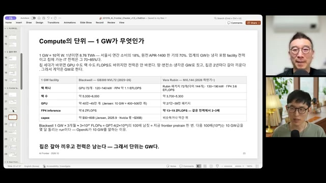
칩은 바뀌고 전력 기반은 남는다
1GW를 10억 W, 연간 8.76TWh로 설명함. 메모리 가격이 2~3년 전보다 10배 올랐다는 발언과 함께, 물리적 병목의 공급자가 이익을 가져가는 국면을 강조함. 과거와 다른 점으로 새로운 compute 수요가 계속 생성될 가능성을 제시함.
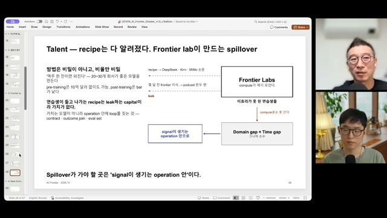
연구 방법의 확산은 어디로 가야 하는가
“방법은 비밀이 아니고, 비율만 비밀.” 20~30개 기업이 좋은 모델을 만들 수 있고 post-training의 진입 장벽은 더 낮다는 주장. 확산된 인재가 향할 곳을 모델 복제보다 contract·outcome join·eval set을 갖춘 운영 안으로 제안함.
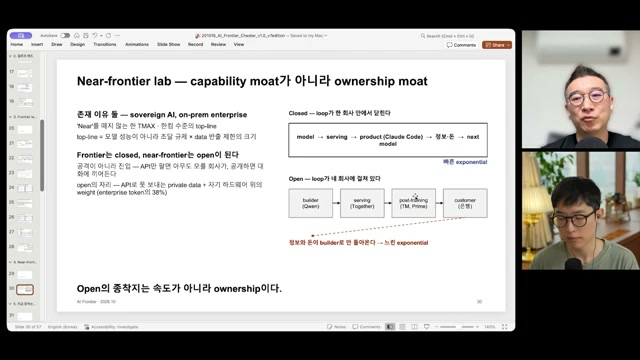
Near-frontier의 해자: 성능보다 소유권
Closed lab은 model → serving → product → 정보·돈 → next model이 한 회사 안에서 연결됨. Open 생태계는 builder, serving, post-training, customer로 나뉘어 정보와 돈의 환류가 느리다는 주장임.
Near-frontier의 존재 이유로 sovereign AI와 on-prem enterprise를 제시함. 이때 시장의 크기는 성능만이 아니라 조달 규제와 데이터 반출 제한의 크기에 좌우된다는 관점임.
운영 밖에서는 만들 수 없는 정답
진짜 경계는 데이터가 있는지보다, 결과를 판정하는 신호가 실제 운영 없이도 만들어질 수 있는지에 있음.
영상은 Frontier Lab의 진입 순서를 검증 가능하고, 디지털이며, 큰 시장부터로 설명함. 전문가를 고용해 문제와 정답을 만들 수 있으면 해당 분야의 학습 환경을 구매할 수 있다는 논리임.
코드 테스트, 법률 문서 검토, 회계 계산처럼 화면 앞의 전문가가 평가할 수 있는 신호와, 재구매·처방 효과·수리 내구성처럼 시간이 지나야 생기는 신호를 구분함. 후자에서는 label 자체가 operation 밖에 존재하지 않는다는 것이 핵심 주장임.
전문가를 고용해 만들 수 있는 신호
제3자가 과제를 보고 그 자리에서 판정 가능함. 전문가 평가를 RL 환경으로 바꿀 수 있으면 lab이 데이터를 사서 domain gap을 줄일 수 있음.
영상의 예: 법률 문서, 회계 계산, 코드 테스트.
현실의 결과가 있어야 생기는 신호
운영을 거치고 시간이 지나야 관측 가능함. 행동과 결과를 연결하는 기록, 접근 권한, 책임 구조가 함께 필요함.
영상의 예: 다시 샀는가, 처방 후 좋아졌는가, 수리가 90일을 버텼는가, 이번 batch의 수율은 얼마인가.
‘살 수 없다’는 주장에도 세 번의 검사가 필요함
데이터를 직접 구매할 수 없다고 해서 안전한 시장이 되는 것은 아님. Lab은 운영 회사를 인수하거나 독점 제휴를 맺고, 현실의 평가를 시뮬레이션으로 대체할 수도 있음. 따라서 영상은 다음 세 조건이 동시에 성립해야 한다고 제안함.
- 정답이 운영 밖에 존재하지 않는가전문가 평가만으로 결과를 대체할 수 없는지 확인.
- Lab이 운영자가 되기 어려운가직접 진입, 인수, 독점 제휴로 같은 신호에 접근할 수 있는지 확인.
- 시뮬레이션으로 신호를 대체하기 어려운가현실 검증의 시간·비용·제약이 실제 경쟁 장벽으로 남는지 확인.
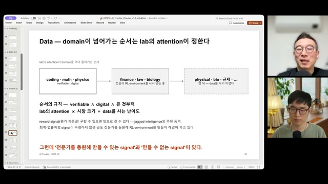
Domain이 넘어가는 순서는 attention의 문제
Coding·math·physics → finance·law·biology → physical·bio·규제의 순서를 제시함. 전문직 업무의 일부도 전문가 RL 환경을 구매해 학습할 수 있다는 주장. 직업 전체의 대체를 입증한 결과라기보다 lab의 진입 방향에 대한 전망임.
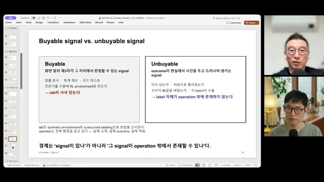
Signal의 존재보다 생성 위치가 중요함
문제와 답을 전문가가 제공하면 중간 과정은 모델이 탐색하고, 정답에 보상을 주는 구조를 설명함. 반면 실제 재구매·건강 개선·수리 내구성·수율은 operation을 거쳐야 드러남. 전문가 채용 공고를 데이터 구매 방향의 신호로 보자는 의견도 나옴.
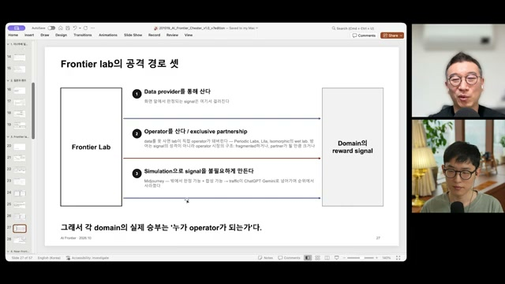
데이터를 못 사면 운영자를 산다
① Data provider를 통한 구매 ② operator 인수·독점 제휴 ③ simulation을 통한 대체를 제시함. Periodic Labs, Lila, Isomorphic의 wet lab을 예로 듦. 이미지·동영상 vertical의 흡수 전망과 규제·작은 시장·특허 영역의 잔존 가능성도 출연자의 판단임.
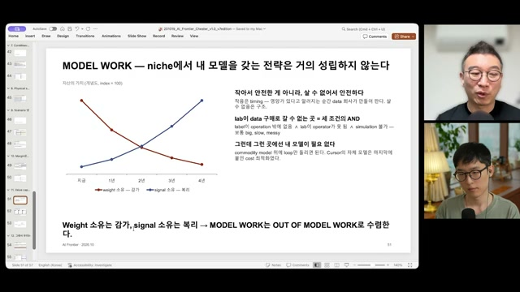
작아서 안전한 것이 아니라, 살 수 없어야 함
Weight 소유는 감가하고 signal 소유는 복리로 쌓인다는 개념도. 교차 시점 약 2년과 index=100은 실측 가치평가가 아님. 세 조건이 성립하는 영역에서는 자체 모델보다 범용 모델 위의 loop가 중요하다는 주장임.
Cursor의 자체 모델을 비용 최적화의 사례로 언급함. “MODEL WORK는 OUT OF MODEL WORK로 수렴한다”는 문장은 모델이 작성한 것이라고 밝힘.
“Weight 소유는 감가,
01:07:54 슬라이드의 개념적 주장 · 실제 자산가치의 실측 결과는 아님
signal 소유는 복리.”
Operation loop: 경험을 규칙으로 압축하는 구조
사업에서는 매일 “왜 매출이 빠졌는가”, “어디를 고쳐야 하는가”라는 질문이 생김. 조치와 결과가 쌓이면 반복되는 패턴을 규칙으로 압축할 수 있음. 그 규칙을 다시 운영에 적용하는 순환이 노정석이 설명한 operation loop임.
거래량이 많은 기존 사업자는 이 순환을 만들 재료가 많음. 하지만 점유율이나 데이터의 양만으로 우위가 자동 완성되는 것은 아님. 관측 → 실행 → 결과 → 검증 → 다음 실행으로 연결돼야 경험이 축적된 자산이 됨.
현장의 결과가 다음 판단으로 돌아오는 순환
- 01문제 관측
매출 하락, 고장, 품질 저하 등 실제 변화 포착.
- 02조치 실행
무엇을 바꿨는지와 당시 조건을 기록.
- 03결과 수집
재구매, 내구성, 수율처럼 뒤늦게 드러나는 결과 확인.
- 04연결·검증
어떤 행동이 어떤 결과와 연결됐는지 평가.
- 05규칙 축적
다음 판단에 쓸 규칙·평가셋으로 압축.
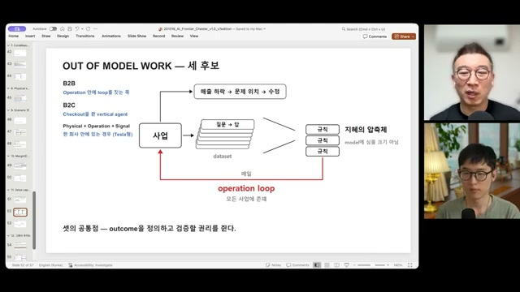
지혜의 압축체
노정석은 signal을 아직 명확히 규정하는 중이라고 밝히면서, 매일의 질문과 답이 쌓여 규칙이 되는 과정을 설명함. 시장 점유율 70%인 회사라면 transaction과 운영 신호가 많을 수 있으며, 이를 AI와 결합하면 강력한 사업자가 될 수 있다는 주장임.
이 순환을 만들지 못하면 같은 렌즈를 가진 스타트업이 공격할 수 있음. 핵심 자산은 거대한 자체 weight보다 운영에서 검증된 규칙일 수 있다는 결론으로 이어짐.
사업의 후보는 세 가지, 공통점은 하나
모델을 제공하는 데서 끝나지 않고, 무엇을 성과로 볼지 정의하고 검증할 권리를 확보하는 것. 영상이 제안한 사업 방향의 공통분모임.
기업 안에 loop를 짓는 사업
Palantir·FDE에서 Autonomous Company Enabler로 확장하는 방향. 모델 대신 계약, 결과 연결, 평가셋을 만들고 서비스 매출을 축적 가능한 운영 자산으로 전환함.
핵심 조건
업무 안에서 결과를 검증하고, loop가 고객 안에 남도록 설계.
결제를 쥔 vertical agent
의도를 이해하는 데서 끝나지 않고 실제 구매와 재구매까지 연결함. “샀는가, 다시 샀는가”가 다음 개선을 위한 reward signal이 됨.
핵심 조건
고객 접점과 checkout을 연결하고, 결과를 직접 관측.
물리적 운영과 compute의 결합
Tesla·xAI·SpaceX, lab의 wet lab처럼 현장 운영에서 신호가 발생하고 이를 학습에 연결하는 구조. 영상은 물리·운영·신호의 결합을 강조함.
핵심 조건
현실의 실행과 결과가 학습으로 돌아오는 경로 확보. 기업가치 평가는 별도 문제.
사용자의 시간과 회사의 생산성은 아직 다른 문제
영상에 인용된 a16z 자료는 상위 1%가 매출의 20%, 상위 10%가 50%를 차지한다고 제시함. 결제자는 전체의 4.5%, 상위 1% 결제자의 월 지출은 $903, 중앙값은 $25라는 설명도 있음. 특정 고사용자 집단의 수요를 전체 소비자의 확산으로 곧바로 읽기 어렵다는 논점임.
또한 지식 노동자 개인이 빨라지는 것과 회사 전체의 생산성이 개선되는 것은 다름. 기존 업무에 AI를 덧붙이는 수준을 넘어, 의사결정과 검증을 포함한 workflow 자체를 새로 설계해야 한다는 것이 B2B에 대한 제안임.
B2C의 승부: coverage × comprehensiveness
소비자 에이전트에는 넓은 업무 범위와 끝까지 해결하는 능력이 함께 필요함. 이탈리아행 항공권은 예약하지만 생수는 사주지 못한다면 coverage에 구멍이 있음. 영상은 여기에 시장 진입 시점도 중요한 변수로 더함.
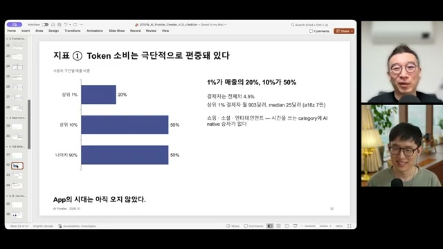
App의 시대는 아직 오지 않았다는 진단
상위 1% 매출 20%, 상위 10% 매출 50%라는 분포와 결제 비중을 제시함. 쇼핑·소셜·엔터테인먼트에서 AI native 승자가 아직 없다는 평가는 영상 시점의 주장임. 발언 중 compute 소비 집중도와 슬라이드의 매출 집중도는 서로 다른 지표로 구분할 필요가 있음.
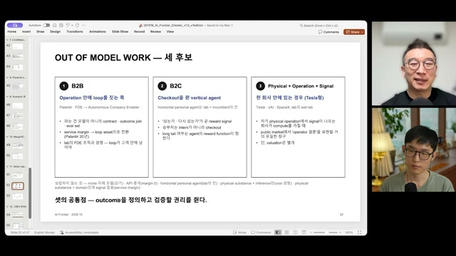
셋의 공통점: outcome을 정의하고 검증할 권리
B2B는 고객 운영 안의 loop, B2C는 checkout, physical은 자기 운영에서 발생하는 signal을 강조함. B2B 사업자는 lab의 FDE 조직과도 경쟁함. 어느 쪽이든 자체 모델 소유 여부보다 결과를 연결하는 권리와 구조가 중심임.
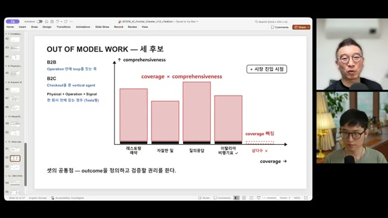
비행기표와 삼다수를 함께 해결할 수 있는가
검색 만족도에서 coverage가 중요했던 경험을 에이전트에 적용함. 글로벌 모델 기업부터 카카오·네이버·SK텔레콤까지 소비자 접점을 놓고 경쟁할 것으로 전망함. B2B에서는 개인 편의를 회사 전체 생산성으로 바꾸는 업무 재설계가 아직 부족하다고 평가함.
미래를 가르는 두 축
모델의 격차가 닫히는가. 매출이 감가상각과 이자를 넘어서는가. 이 두 질문으로 네 가지 경로를 구성함.
출연자 개인 전망노정석은 Frontier Lab 수가 늘고 격차가 좁혀지는 방향에 더 높은 가능성을 둠. 아래 확률은 슬라이드가 명시한 대로 “지극히 Chester의 개인적 예측”이며, 데이터 근거는 희박하다고 스스로 밝힘.
S1 · 국지적 조정과 범용재화
취약한 builder가 정리되고 인프라는 utility로 수렴. 가치는 operator로 이동한다는 기본 시나리오.
S3 · Intelligence oligopoly
2~3개 lab이 성능 프리미엄을 오래 유지함. 모델 층의 가치 포착이 지속되고 조정 폭은 작다는 경로.
S2 · 신용 경색과 산업 재편
SPV 정리와 모회사 구조조정이 이어짐. 저렴해진 인프라 위에서 operator의 시대가 더 빨리 열릴 수 있다는 경로.
S4 · 소모전 끝의 단일 승자
경쟁 비용을 끝까지 감당하는 자본이 가장 큰 lab 하나가 남음. 네 경로 중 가장 파괴적인 구조조정을 상정함.
공헌이익과 회사 전체의 현금 창출을 구분함
Inference 매출에서 변동비를 뺀 공헌이익이 좋아도, pre-training, 다음 세대 연구, 인건비, 데이터센터 선지급까지 부담하면 전체 현금 구조는 다를 수 있음. 영상은 아직 “버는 돈 > 투자”의 전환점이 오지 않았다고 평가함.
편집 주석공헌이익, 회계상 이익, 설비투자를 포함한 현금흐름은 서로 다른 기준임. 영상의 워터폴은 부담 항목을 설명하는 개념도로, 각 기업의 공시 손익계산서나 현금흐름표를 재현한 것이 아님.
출연자의 투자 관점과 사업 전략
Build-out 국면에는 전력·부지·HBM·패키징·칩 같은 물리적 병목을 보고, 이후에는 operator로 가치가 이동한다는 순서를 제시함. 다만 상장 시장에서는 operator에 대한 투자 수단이 부족해, 이 생각을 자기 사업으로 표현해야 할 수 있다는 설명임.
Frontier Lab 지분은 S3·S4처럼 자신의 논지가 틀리는 세계에 대비한 “보험”으로, 차입과 임대료의 차이에 의존하는 spread business는 회피 대상으로 제시함. 이는 출연자의 포지션 설명이며, 이 글이 별도 검증해 제시하는 매매 권고는 아님.
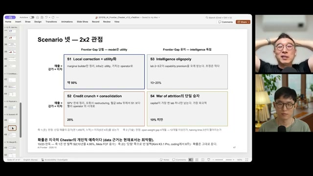
S1이 기본 경로라는 개인적 전망
OpenAI·Anthropic이 원하는 세계는 S3일 수 있지만, 노정석은 gap이 닫히고 frontier lab이 늘어날 것으로 봄. S2처럼 보이는 국면도 불확실성이 걷히면 S1으로 이동할 수 있다고 설명함. 확률의 데이터 근거가 희박함을 슬라이드에 명시함.
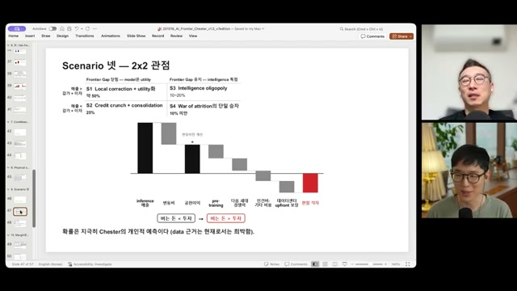
매출이 투자 부담을 넘는 전환점
변동비를 뺀 뒤에도 pre-training, 다음 세대 경쟁력, 인건비, upfront 보장을 부담해야 한다는 설명. Anthropic의 inference margin 같은 수치를 전체 사업의 흑자로 읽지 말아야 한다는 취지이며, 이 전환 시점을 가장 중요한 timing 변수로 봄.
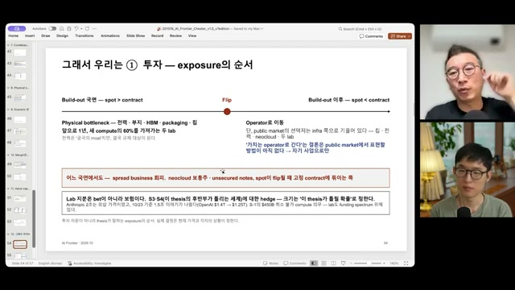
사업은 lab이 하지 않는 곳으로
Flip 이전에는 physical bottleneck, 이후에는 operator를 보는 순서를 제시함. “앞으로 1년 새 compute의 60%를 가져가는 두 lab”도 언급되지만 근거는 별도 검증되지 않음.
Lab 지분을 논지 실패에 대한 hedge로 설명하고, 사업은 다른 영역에서 만들 것을 제안함. 노정석은 자신도 B2B enterprise AI 회사를 준비한다고 밝힘.
전망보다 유용한 것은 바뀌는 지표
회차는 네 개의 국면 지표, 두 개의 operator 지표, 하나의 가설 전환 지표를 제안함. 어느 방향으로 움직이는지 지속해서 확인하는 방식임.
-
국면 전환
Spot–contract spread의 방향
최신 세대의 1년 reserved 가격이 하락으로 돌아서는지 관찰. 구세대 가격 하락과 구분해야 함. 영상은 10/23 기준 아직 그 전환이 아니라고 판단함.
-
국면 전환
Payback period
설비 투자 회수 기간이 길어지는지 확인. CoreWeave 2.5년, SpaceX 약 1년을 예시로 제시했으나 산식·범위는 미검증. 박종현은 A100 같은 구세대 GPU도 여전히 매출을 낸다고 덧붙임.
-
국면 전환
유료 매출 vs. 감가상각 + 이자
국지적 조정과 더 큰 구조조정을 가르는 변수. 매출 성장률만 보지 않고 비용과 자금 부담을 충당하는 시점을 함께 확인함.
-
국면 전환
Open-weight–frontier gap
영상의 기준값은 약 4개월. 12개월을 넘으면 S3의 가능성을 높이는 신호로 제안함. 발언에서는 2개월 안쪽으로 줄어드는 느낌도 언급하므로, 같은 평가 기준의 시계열이 필요함.
-
Operator의 시대
Coding 밖에서 검증 기준이 생기는 분야의 수
어떤 산업에서 결과를 정의하고 검증할 수 있게 되는지 관찰. Operator 기회가 생기는 동시에 lab이 구매할 수 있는 학습 환경도 넓어질 수 있음.
-
Operator의 시대
Per-token vs. per-outcome·seat 매출 비중
토큰 사용량에서 결과·좌석 기반 과금으로 무게가 이동하는지 확인. 보조 지표로 FDE 프로젝트의 token 비용과 수행 회사의 margin을 비교함.
-
기존 가설의 전환 가능성
RSI의 첫 관측
새 pre-training이 직전 세대보다 작으면서 더 좋은 성능을 보이는 첫 사례를 관찰 대상으로 제시함. Continuous learning 등 다른 연구 돌파구도 현재 분석의 전제를 바꿀 수 있음.
Token 비용 : 프로젝트 margin
FDE는 고객의 현장에 깊이 들어가 적용을 돕는 엔지니어링 방식으로 소개됨. 프로젝트에서 모델 사용료가 수행 회사의 이익보다 큰지, 그 반대인지 비교해 lab과 operator 중 누가 가치를 가져가는지 가늠하자는 제안임.
편집 주석영상에서도 아직 “사람들의 감”에 의존하는 지표라고 인정함. 실제 비교에는 margin의 정의, 인건비 포함 여부, 매출 인식 기간, 모델 사용료 범위를 맞추는 작업이 필요함.
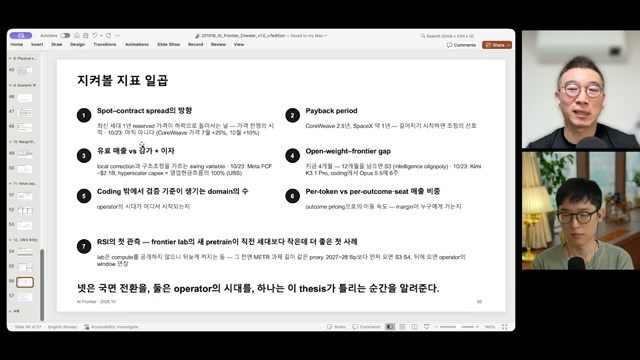
넷은 국면, 둘은 operator, 하나는 가설 전환
노정석은 이 일곱 지표를 1~2주마다 확인한다고 설명함. 각 수치의 수준보다 방향과 전환 시점을 보려는 관찰 체계임. 지표별 데이터 원천과 반복 측정 방법은 이 노트에 제공되지 않음.
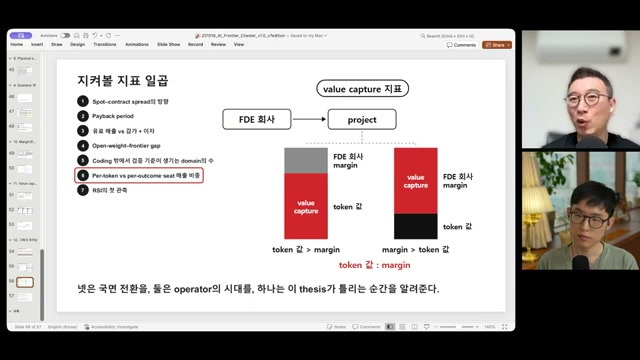
가치가 이동했다는 증거는 어디서 보이는가
Token 비용보다 operator의 margin이 커지는지 보는 비교를 제안함. RSI나 예상보다 빠른 superintelligence의 등장은 전체 논지를 무효화할 수 있는 위험으로 언급됨. 연내 등장 가능성은 전망이며 확인된 사건이 아님.
현장에 적용할 때 남겨야 할 질문
이 회차에서 가져갈 만한 것은 특정 기업의 목표주가보다, 우리 사업의 신호가 어디서 생기고 누가 가져갈 수 있는지 묻는 방법임.
필드로봇·건설기계에는 유용한 출발점
응용 해석고장, 내구성, 작업 품질, 안전 사고처럼 실제 사용 후에 드러나는 결과는 운영 기반 신호의 후보임. 단순히 센서 로그를 많이 저장하는 것보다, 어떤 조건에서 어떤 조치를 했고 무엇이 달라졌는지를 연결하는 구조가 중요함.
이 관점에서 contract는 데이터·운영 접근과 사용 권한, outcome join은 실행과 지연된 결과의 연결, eval set은 개선 여부를 판단할 검증 기준으로 풀어 볼 수 있음. 이는 영상 용어를 현장 설계에 옮긴 해석이며, 구체적인 구현은 분야별 검토가 필요함.
- 결과를 관측할 수 있는가작업 직후 품질뿐 아니라 30일·90일 뒤 고장과 유지보수 결과까지 연결 가능한지 확인.
- 실행과 결과를 연결할 수 있는가장비·작업·시점·환경 조건을 식별하고, 단순 상관을 개선 효과로 오인하지 않도록 검증 기준 마련.
- 그 결과를 다시 사용할 권리가 있는가고객·현장·장비 운영자 사이에서 접근 권한과 개선에 사용할 범위를 정리.
- 개선이 다음 운영에 반영되는가보고서로 끝나지 않고 규칙, 모델, 절차의 변경으로 돌아가는 경로 확인.
‘Loop만 있으면 된다’는 결론은 조건부
노정석도 Frontier Lab과 직접 경쟁하려면 model work가 필요하다고 인정함. Physical AI처럼 인지·제어·실시간 제약 때문에 모델 자체가 domain-specific해야 하는 경우, 범용 모델만으로 충분한지는 별도로 검증해야 함.
또한 signal은 시간이 지나면 자동으로 복리 성장하지 않음. 측정 오류, 환경 변화, 선택 편향, 결과의 귀속 문제를 해결하지 못하면 데이터가 쌓여도 학습 가능한 자산이 되지 않을 수 있음. 소유권과 함께 품질·검증·환류가 필요함.
이 분석의 네 가지 한계
- 수치의 독립 검증 부재. CoreWeave·Oracle·Meta·Anthropic 관련 값은 AI 도구로 조사한 슬라이드의 2차 정보임. 공시·계약·원 보고서와의 대조가 남아 있음.
- 확률의 직관 의존. 시나리오 비중은 보정된 예측치가 아님. 수치 합계에도 차이가 있어 정밀한 투자 모형으로 사용하기 어려움.
- 관점의 편향 가능성. 두 출연자 모두 AI 확산에 베팅한 입장. Ken Griffin·Bernstein 등의 반대 관점은 짧게 다뤄져 균형 있는 반론 검토에는 부족함.
- 전제를 바꿀 연구 돌파구. RSI, continuous learning, 예상보다 빠른 초지능의 출현은 compute·모델·운영 사이의 관계를 달리 만들 수 있음.
“Toyota 아니면 Ferrari”라는 비유는 이 논지의 압축판임. 거대한 범용 사업자가 되거나, 독특한 운영과 결과를 소유하는 사업자가 되라는 제안. 중간 사업이 모두 사라진다는 검증된 법칙보다는, 쉽게 복제되는 차별화에 머무르지 말라는 전략적 경고로 읽는 편이 적절함.
우리만 볼 수 있는 결과는 무엇인가
모델이 더 싸고 좋아지는 세계를 가정해 보자. 그때에도 고객이 우리를 필요로 하는 이유가 남는가. 우리가 실행하고, 결과를 확인하고, 다음 판단을 바꾸는 순환이 있다면 그곳이 다음 가치를 살펴볼 출발점임.
무엇을 바탕으로 썼고, 무엇이 남아 있는가
원자료
AI Frontier Korea · EP 120. 가치는 어디로 가는가: AI 시장 조정, CoreWeave 위기와 operation loop
- 게시일
- 녹화 시점
- 2026년 10월 24일 토요일 아침
도입부 발언 기준 - 길이
- 1시간 20분 26초 · 4,826초
- 출연
- 노정석, 박종현
- 편집
- 김유진
- 영상 ID
- eO8brZguMpU
- 영문 제목
- Where Does Value Go? The AI Market Correction, CoreWeave’s Crisis and the Operation Loop
최승준은 이번 회차에 불참함. 영상 말미에는 일산의 ‘AI 유치원’ 한미유치원 소개가 포함됨.
자료의 계보와 한계
- 발언: 원 노트는 화자 표시가 있는 YouTube 한국어 수동 자막을 기준으로 작성됨.
- 이미지: 1080p·720p·480p 스트림은 HTTP 403으로 받지 못했고, 로그인 쿠키 없이 mweb의 360p 영상에서 39장을 추출했다고 기록됨. 작은 글씨에는 판독 한계가 있음.
- 수치: 출연자가 Claude·ChatGPT·Fable 등을 이용해 조사한 슬라이드의 제시값. 원 공시·논문·시장 데이터와 대조하지 않음.
- 이 글의 편집: 제공된 노트의 논지를 주제별로 재배열하고 반복을 줄임. 39개 이미지와 각 장면의 시간 링크를 보존함.
- 추가 설명: 쿠폰과 YTM의 구분, 확률 합계, 단위 환산의 가정, 현장 적용 질문은 편집·응용 주석으로 구분함.
후속 검증을 위한 원천 자료 목록
영상에서 언급된 a16z의 First Semis, Then Software와 소비자 AI 자료, Epoch의 모델 격차 분석, Arena 비교, Chinchilla 논문, ORTEX 공매도 집계, Goldman·Bernstein·JPMorgan 보고서, Nikkei의 장부 밖 의무 추정치 등이 대조 대상임. 해당 원문 링크는 제공된 노트에 없어 임의로 연결하지 않음.
금융 분석을 이어갈 경우에는 CoreWeave의 공시·차입 약정·만기표·고객 계약·CDS 기준일, Meta와 Oracle의 보증 및 임대 의무를 먼저 확인할 필요가 있음. 기업별 수치의 통화, 시점, 연결 범위, 중복 포함 여부도 함께 확인 대상임.